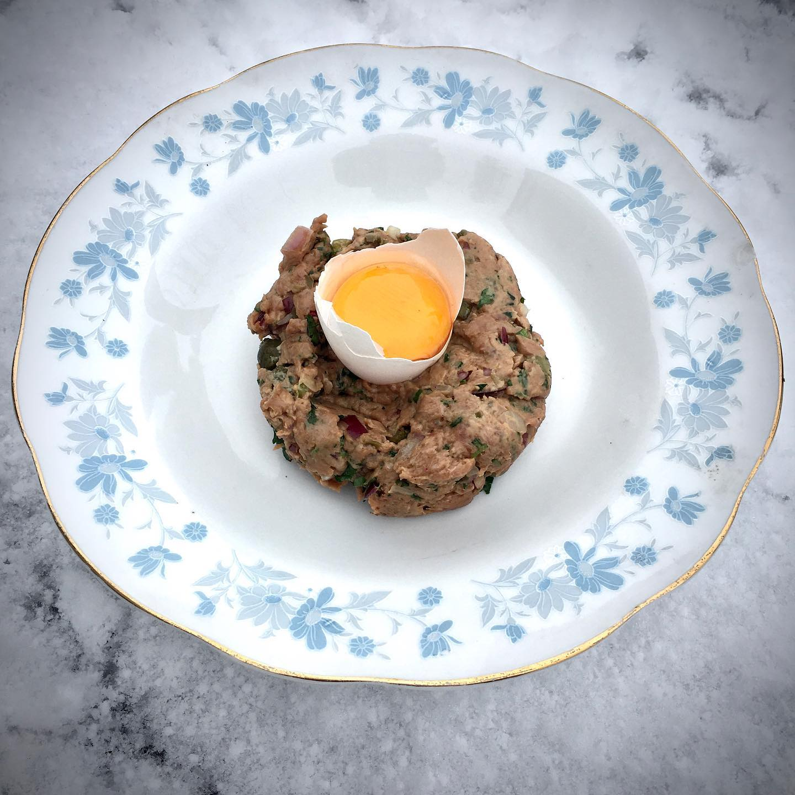

Tatársky biftek podľa @v_trnci_rasovka — Normy Jedál
Tatarák 🐮
👉🏼 dva týdny vyzrálé býčí maso z malochovu ve Všelibicích
👉🏼 cornichon 🥒
👉🏼 šalotka 🧅
👉🏼 bazalka ☘️
👉🏼 petrželka 🌿
👉🏼 kapary
👉🏼 vejce z volného výběhu 🥚
👉🏼 dijon
👉🏼 domácí majonéza
👉🏼 sójová omáčka 🍶
👉🏼 topinky z kváskového chleba na sádle 🍞
👉🏼 česnek 🧄
#v_trnci_rasovka #rasovka #liberec #libereckykraj #visitliberec #visitjizerky #vylet #cestovani #cestujeme #svetovecesko #czech #milujemehory #restaurace #hospoda #tatarskybiftek #tatarak #tartare #hovezi #kamnaobed #obed #jidlossebou #takeaway #okenko #gastro #jidlo #jidlonaprvnimmiste #milujemejidlo #foodporn #jakoubabicky #domaci